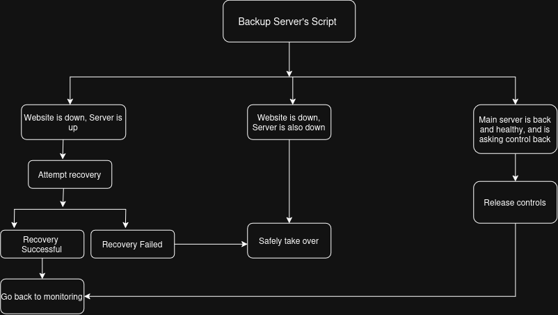

<!DOCTYPE html>
<html lang="en">
<head>
    <meta charset="UTF-8">
    <meta name="viewport" content="width=device-width, initial-scale=1.0">
    <title>Building a High-Availability (HA) Server Cluster</title>

    <link rel = "stylesheet" href="../../static/style.css"> 

</head>
<body>
        <h1>Building a High-Availability (HA) Server Cluster</h1>

        <p>Github: <a href="https://github.com/1SUSHANT1/HA_ServerCluster">https://github.com/1SUSHANT1/HA_ServerCluster</a></p>


<h2>About</h2>


<p>This is a project on Designing and Implementing a High-Availability (HA) Server Cluster with a main and standby web server. The standby server continuously monitors the main server and website, attempts automated recovery when possible, synchronizes data between servers, and takes over production when recovery fails. When the main server returns and is confirmed healthy, it can request control back and gracefully resume responsibility. The goal is to build and understand the failover and recovery process rather than simply having a second server sitting by as a backup. This project assumes that you have two web servers available. If you need help building a web server, do this <a href="https://www.sushantadk.com/SupportingDocuments/buildingAServer.html">Building an Always-On Web Server</a> twice and you've got two web servers.</p>


<h2>Plan</h2>
</p>The plan is very simple. On the backup server, we'll write a script like <em> if the main server goes down, take over</em>, and <em>if the main server comes back up, hand the responsibility back</em>. And on the main server, we'll write a script like <em>if you come back and see backup taking over production, shift the responsibility back to you</em>.</p>

<h2>Real Plan</h2>
</p>This is my most complex project yet. I have thought about this for about a year now and specifically for this project, I have NOT read anything about how high availability systems and how server clusters work. You read that correctly, I have NOT done any research on HA systems and server clusters. I do know the main idea, 'if one server goes down, another should take over with little or no downtime so to the client, it appears as if the problem never occurred.'</p>

<p>Reason being, I can do it all by myself the way I want to. My methods might be inefficient, complicated, crude but I can reinvent the wheel. Multiple wheels for that matter. I will attempt to discover my version of the already established standard process and procedures. I will include a section at the end where I finally research the HA systems and server clusters and list the industry standards and processes I independently discovered. This project will follow 'necessity is the mother of invention' principle.</p>

<h2>Approach</h2>
The project will be split into three sections:
<ol>
<li>Production server and backup server in the same network and electric grid (my house).</li>
<li>Production server and backup server in different network and electric grid.</li>
<li>Automated to automatically adapt, negotiate and determine how to handle every situation.</li>
</ol>

<p>The first approach has obvious failure points. If the main and backup servers are on the same network and connected to the same electrical grid, they share common points of failure. A network or power outage could take both servers down simultaneously.</p>

</p>The second approach eliminates these failure points because network/electricity outage on the main server won't affect the backup server since it is on a different network and electric grid. But this approach adds complications because since the servers are in different networks, they have to communicate via the internet.</p>

</p>The third approach is just a combination of first and second where everything is automated so the failover works as intended no matter where the main and backup servers are.</p>

Every task will be completed individually, and later integrated to complete the project. This is because it is easier to keep track of ten little scripts than one giant one.</p>

<h2>Preface</h2>
</p>This project revolves around DNS because that's where the active/standby server role is determined. In my configuration, the connections to my server can only made through Cloudflare using my domain name, and I can have the domain name pointing at one IP address at a time. So whichever IP address my DNS record points to is my active server. </p>

</p>The switch is actually just changing the DNS record from active server to the standby server once the necessary conditions are met.</p>

</p>Primarily, <em>rsync</em> will be used to create backups on the standby server to send incremental files avoiding frequent heavy traffic between my two little servers.</p>

</p>Startup logic will be changed on both servers because once the server cluster is configured, no server should <em>willy nilly</em> take control over at startup. Instead, they will perform necessary checks and decide when to take over production.</p>

</p>There's more but these are the ones that come to mind right now. Let's get to building! I am sure I will bump into whatever I am missing.</p>


<h2>Both servers on the same network</h2>
</p>This one is easier because since both servers are on the same network, the communication is simpler. We can also leave DNS out of this one, and we will use the router's port forwarding address to accomplish switch. We can just configure the backup server to set it's local IP address to the IP address of the dead main server so when the router forwards the traffic to the configured address the backup server gets the traffic.</p>

<h3>Let's Start</h3>
</p>Let's login to the backup server and write a script which checks if the online is active and if it can ping the main server.</p>


</p>You can see my bash script that I just wrote which uses <em>curl</em> to check if the website is online and <em>ping</em> to check if the server responds. I ran into couple problems: <em>curl</em> always returns offline and <em>ping</em> even though successful, doesn't exit and hangs. </p>


</p>I figured out the problems. My Cloudflare had <em>'bot fight mode'</em> enabled which was throwing curl off. I disabled it and <em>curl</em> could properly access my website. I also added a <code>ping -c 1</code> to my ping command which only pings once and exits.</p>

</p>I also did case checks where if I stop Apache on the main server, <em>curl</em> detects website offline but <em>ping</em> is still successful, and if i turn the server off, the checks correctly identify website and server both are down.</p>

<h3>First Crude Version</h3>
</p>Let's configure the standby server to start the necessary services if either website or the server is down. I am aware that it is one of many cases but this is where we start.</p>

</p>My backup server uses NGINX instead of Apache. It was configured to start NGINX and Gunicorn at boot. Let's undo that. Run <code>sudo systemctl disable nginx</code> and <code>sudo systemctl disable gunicorn</code>. </p>

</p>Now let's update the script.</p>


</p>You can see that I added a boolean which starts true but is turned false if either website or server is down. After running the script, we can see that it correctly identifies if the server is down and it should start necessary services. </p>

Let's add the logic start the necessary services in the script. Keep in mind, you have to run the script as root to execute <em>systemd</em> commands.</p>


</p>You can see that I added the logic to start NGINX and Gunicorn. When I stop Apache on my main server and run the script, you can see it correctly identifies that the website is down and starts NGINX and Gunicorn. NGINX and Gunicorn have already been configured to listen on the correct port and serve the website when I built this server.<p>

</p>I will now manually initiate the failover. First, I will change my main server's IP address. I'll do this by adding a new IP address and removing the old one. Run <code>ip addr add 192.168.1.251 dev wlan0</code> to add a new IP address and ,<code>ip addr del 192.168.1.250 dev wlan0</code> to delete the old one.</p>


</p>Now, the main server's IP address is <em>192.168.1.251</em>. But, the router is still port forwarding to <em>192.168.1.250</em>, so the main server is no longer receiving the internet traffic from the router. Now if I change my backup server's IP address to <em>192.168.1.250</em>, it will get that traffic. Then I will run my script which detects that the server is down and starts NGINX and Gunicorn. Since NGINX is already configured to listen on port 80 and 443, it will get the web traffic and serve the website.</p>


</p>You can see I added the router's HTTP/HTTPS port forwarding address to the backup server, and when I ran the script, NGINX served the website. How do I know it's backup server's NGINX?</p>

</p>Because currently, my website on the main server looks like this:</p>
    


</p>NGINX was serving my old website back from when I built the backup server. You can also see that I ran into a problem where I lost SSH access to my main server when I changed its IP address. I had to use my USB recovery method from <a href="https://www.sushantadk.com/Projects/hardeningTheServer.html">Security Hardening and Assessment of a Self-Hosted Server</a> to get back to my server, change IP address back to <em>192.168.1.250</em>, remove this IP address from the backup server so finally my main server would start hosting the website again.</p>

</p>If you haven't fallen asleep until now, you must've realized that not only the backup server takeover is possible, we just did it. Yes it was messy and we did create bigger problems but what matters is that we did it. Now it is just a matter of managing this mess and automating it and we're golden!</p>

</p>Moving on, I added the logic add the router's Port forwarding IP address(<em>192.168.1.250</em>) to the backup server if the main server goes down, and if the number of services successfully started by the backup server is equal to the number of required services for regular operation. </p>


</p>Now this time, I will shut my main server down to avoid making the mess like last time and run this script. With the main server shut off, when I run the script, the necessary services should be initialized,  and the IP address should be added and my website should be hosted from my backup server. Let's try it.</p>


</p>You can see that on my backup server, I started with stopped NGINX, stopped Gunicorn, and only one IP address. When I shut my main server off and run my script, it successfully started NGINX and Gunicorn, added the port forwarding IP address, and began serving the website. Make sure you delete the IP address before turning the main server back on so there is no IP address conflict.</p>

</p>Congratulations! You just made a 'kinda little bit working failover server cluster'.</p>


</p><b>Unfortunately, this is where the project actually starts. All this didn't even scratch the surface of the true extent of this project.</b></p>


<h3>Backup</h3>
</p>Now to address the elephant in the room. Why is the backup server showing content from a week ago? That's because we haven't automated backup yet. Now this one is actually easy. I use <em>rsync</em> to send incremental file list which uploads new and edited files in the target server. </p>


</p>You can see I am using <em>rsync</em> to send incremental file list for directories: Images, Scripts, static, and templates and it is only sending the files that are new or updated.  Let's disconnect the main server from the network (alternative to shutting it down), and run the script we created to see if the backup server serves the updated website.</p>


</p>It should come to nobody's surprise that the backup server now served the updated webpage. Well, I did run into a 403 permissions error but quickly fixed it recursively with <em>chmod</em>. Maybe when <em>rsync</em> updates the files, it messes with the permissions somehow.  We'll eventually figure it out but let's create an automated backup cron job for now.</p>

</p>Only except that <em>rsync</em> will ask for  a password and fail. We need to create a SSH key that enables us to log into the backup server without typing in the password every time.</p>  


</p>I know I should move away from <em>rsa</em> keys but what are you gonna do? old habits die hard. Let's  write a simple script that sends an incremental file list from <em>rsync</em> specifying the <em>rsa</em> key to the backup server.</p>


</p>You can see my script that transfers mission critical files to the backup server automatically and keeps logs. Also you might've noticed that my script ran without any errors. It might not mean anything to you but I break things so much that it's strange to me when things work out the first time. Let's add this script to cron to run every minute and watch the log. We'll correct the backup frequency later.</p>

</p>Nope! I was right. Even tho it didn't throw an error, instead of creating backups on my backup server, it just created a directory on my main server and transferred files. Reason being I put <em>susie@192.168.1.248</em> as my target instead of <em>susie@192.168.1.248:/home/susie/myWebsite/</em>. Well, let's fix that and run it again.</p>


</p>Now this time you can see it actually created an incremental backup. Let's add it to cron now.</p>


</p>You can see my script is running into problems. I know the script is okay, it runs and does make backups. Maybe it is experiencing problems because it is being run as root. I wouldn't think this is a permissions issue for root. Let's manually run the script as root ad see what's up.</p>


</p>Ah! root had never connected to my backup server before, it has always been the user Gucci. You can see that when I added my backup server's fingerprint to root's known hosts, the backups running once every minute are successful now. Now you can change the backup frequency according to your needs. I'll set it to once every 30 mins. If you want to judge, go ahead but I'm real more than perfect.</p>


</p>Now that we got it working, let's make it secure. Did you notice that the <em>rsync</em> command doesn't  need root privileges to successfully execute? So instead of making root's crontab execute it, which would cause it to have elevated privileges, we can run it through a service user.</p>

</p>Here are the steps I took:</p>


<ol>
<li><code>sudo adduser -S -D backupAdmin</code> to add a basic system user and <code>cat /etc/passwd | grep backupAdmin</code> to confirm that it was created</li>
<li><code>sudo -u backupAdmin ssh-keygen -t rsa -b 4096</code> to create a key as the new user and configure it properly</li>
<li><code>sudo -u backupAdmin bash -c "ssh-copy-id -i /home/backupAdmin/.ssh/key_backupServer.pub susie@192.168.1.248"</code> to copy the key into the backup server. We have to do it this way because the system user doesn't have shell access. </li>
<li><code>sudo -i
</code> to properly access the system user's directory</li>
<li><code>cp /home/user/myWebsite/Executables/clusterAdmin/backupAdmin /home/backupAdmin/</code> to copy the backup script to the service user's directory. Then I used nano to edit the file to specify the service user's key and configured it to keep logs in the system user's directory.</li>
<li><code>chmod 755 backupAdmin</code> to give the owner full access and <code>chown -R backupAdmin backupAdmin/</code> to recursively change the owner of every file and directory inside the <em>backupAdmin/</em> directory.</li>
<li><code>sudo -u backupAdmin /home/backupAdmin/backupAdmin </code> to run the script as the system user and confirm that it worked.</li>
<li><code>crontab -u backupAdmin -e</code> to access the system user's crontab and add the script which runs every minute. After confirming that it is correctly creating backups, I changed the frequency to run the script every 30 mins.</li>
<li><code>crontab -e</code> to remove the job from root's crontab.</li>
<li>Then I also added a log rotation which checks if the log file has exceeded ~10MB (I later realized that I was missing a space before ']' in the code.), in which case it renames the current log file to <em>rsyncBackupLog1.txt</em> (overwriting any existing rotated log) and starts a fresh new log file for subsequent backup entries. </li>
</ol>

<p>Git is used to version control the website's source code and track changes over time. <em>rsync</em> synchronization may update corrupted/unintentionally modified files on the backup server leaving me no way to revert them, so having Git as a backup ensures that any accidental changes can be reverted easily. Git is managed manually, and the process involves committing changes locally and pushing them to a remote repository.</p>

</p>There isn't much to it for backup than this on this project. We will later have to also synchronize password hash for my admin page and secrets which will be used to modify the IP address on my DNS record but they come later. For current scope, the backup script is perfectly fine.</p>


<h3>Modifying router configuration</h3>
</p>From the <b>First Crude Version</b> section, we know that the server which gets the router's port forwarding address is the active server. There are a few problems  in my configuration for that setup. First, my servers are on router's DHCP pool which causes my servers to get a random IP address from the pool when they reboot, especially when backup took over main server's IP address, the main server got assigned an IP address that I didn't recognize. Second, keeping the router's port forwarding IP address on the DHCP pool is risky because if something happens and the router assigns the port forwarding IP address to some other device, my website will be down until I fix it.</p>

</p>I have these problems because I am hosting the website from a residential address. In an industrial setup, I would think that there would be routers, switches, and other appliances dedicated for this so it wouldn't be such a big problem there.</p>

</p>But anyway, the plan is move some addresses outside of the router's DHCP pool, and use the addresses outside of the pool to manage the servers. This setting in my router was under <em>'IPv4 Address Distribution'</em>. </p>


</p>I will edit it so that the new Dynamic IP Range will be <em>192.168.1.10 - 192.168.1.254</em>, which leaves <em>192.168.1.2 - 192.168.1.9</em> outside of the DHCP which will be used to manage my servers. Ideally, you want to locate an IP address block which has been never assigned before. In my case, IP addresses <em>192.168.1.2 - 192.168.1.9</em> were never assigned before. They were too boring I guess.</p>


</p>
<p>Ok that's done. Next, I will reserve an IP address for each one of my servers.</p>


</p>Reserve may not have been the right word. It was more like 'move the IP addresses outside of DCHP pool and assign them static IP addresses through their MAC addresses'. Once I restarted both the servers, my backup server did get the new IP address but my main server still had it's old IP address. </p>

</p>I traced the problem to <code>ipv4.method manual</code> and the randomized MAC address. I fixed both by changing ipv4.method to auto and using the permanent hardware MAC address. I also modified port forwarding to send the traffic to the main server's new address so the server stays online while I figure this out.</p>

</p>This really simplified my problem. Here is the plan now. My main server gets IP address: <em>192.168.1.3</em> when it boots up and my backup server gets <em>192.168.1.4</em> when it boots up. So did you figure the best IP address to set port forwarding to? Obviously, it is <em>192.168.1.5</em>. When my servers boot up, they decide what to do. If main wants to take control, it adds IP address <em>192.168.1.5</em>, and serves traffic. If it goes down, backup notices and changes it's IP address to <em>192.168.1.5</em> and serves traffic. I'm going to call this 'Sushant's tap/jug method' because the tap(internet traffic) is always at <em>192.168.1.5</em>, and whichever server puts their jug under the tap, gets their jug filled(serve internet traffic). Plus, these 2 guys are co-coordinating as to who who fills their jug and when.From now on, the router's port forwarding address may be referred to as the <em>tap</em> address.</p>

</p>Basically, no server will serve the traffic without explicitly declaring that they are going to take over and adding the IP address. In fact, I'll make it even simpler. I will let both servers start their services (NGINX/Apache/Gunicorn) at boot and always stay standby so the switch is fast and seamless.</p>


<p>I haven't actually set the port forwarding to <em>192.168.1.5</em> yet because I don't want my website to go down until 'I figure it out'. We will come back to the router when it is time to change the port forwarding address again.</p>


<h3>Case by case Plan</h3>
</p>Ready to get your mind blown from the complexity of this project. Keep in mind, we're still on the early stages of Phase 1 of the project. We have laid a foundation for Phase 1 but haven't even touched Phase 2 or 3, and each one is more complex than this.</p>

</p>The script on backup server will be modified to handle 3 different cases:</p>
<ol>
<li>Website is down, main server is up. In this case, the backup server attempts to recover the website by communicating with the main server.</li>
<li>Website is down, main server is also down. In this case, the backup server will take over.</li>
<li>Main server is asking for control back. If the main server is healthy, the backup server will release control and let the main server take over. If not, the backup server will continue to serve the traffic.</li>
</ol>



</p>The script on main server will be modified to:</p>
<ol>
<li>After boot, check if the website is being served by backup sever. In this case, the main server has to prove that it is healthy enough to serve the website and ask the backup server to release the control. If it cannot prove that it is healthy, attempt recovery. </li>
<li>After boot, website is down. In this case, perform necessary checks and take over production.</li>
</ol>

</p>The phrases 'backup server attempts to recover the website' ,  'the backup server will take over', 'prove that it is healthy enough', 'release the control' sound cool and mysterious don't they? </p>

</p>We do have to implement some kind of waiting mechanism to reliably conclude the events rather than jumping to perform the switch the very second a check fails. Only after certain waiting time and certain failed checks can we go ahead with the switch. I think <code>sleep</code> can help us do this. The health checks will be done on the main server itself and the result will be sent to the backup server in case main server comes back after being down.</p>

</p>Let's get building!</p>

<h3>Writing the script</h3>

<p>I started by modifying and adding to the script we already started with. I approached it case by case exactly like a flowchart. I figured that I don't actually have to kill my server/website to test the failover mechanism. Instead, I can simulate different scenarios and observe how the script handles them. For instance, change <code>ping -c 1 192.168.1.3</code> to <code>ping -c 1 192.168.1.2</code>. In this case, the script will simulate the main server being down because there is nothing on the IP address <em>192.168.1.2</em>.</p>

<p>You can see the progression of my script and how I wrote it here: <a href="https://github.com/1SUSHANT1/codeRepo" target="_blank">GitHub Repository</a></p>


<p>I modified the script to simulate website down, server up and website comes back after some time.</p>
<pre>
susie@mysaltyserver:~/myWebsite/Executables/clusterAdmin$ sudo ./healthCheck1
Website is detected to be offline. Let's run checks to see to reliably confirm that it is down
 Check 1. Website still down. Sleep for 3secs before continue
 Check 2. Website still down. Sleep for 3secs before continue
 Check 3. Website still down. Sleep for 3secs before continue
 Check 4. Website still down. Sleep for 3secs before continue
 Check 5. Website still down. Sleep for 3secs before continue
 Check 6. Website still down. Sleep for 3secs before continue
 Check 7. Website still down. Sleep for 3secs before continue
 Check 8. Website still down. Sleep for 3secs before continue
Website is confirmed to be down after 9 checks
Let's see if we can ping the server
Ping Successful. This is strange. Website is down but server is up? Let's sleep 10 and check again. Maybe the server just booted.
The website responded. We are good
</pre>
<p>I modified the script to simulate website down, server up but the website didn't come back after waiting. We can see script enters recovery mode here.</p>

<pre>
susie@mysaltyserver:~/myWebsite/Executables/clusterAdmin$ sudo ./healthCheck1
Website is detected to be offline. Let's run checks to see to reliably confirm that it is down
 Check 1. Website still down. Sleep for 3secs before continue
 Check 2. Website still down. Sleep for 3secs before continue
 Check 3. Website still down. Sleep for 3secs before continue
 Check 4. Website still down. Sleep for 3secs before continue
 Check 5. Website still down. Sleep for 3secs before continue
 Check 6. Website still down. Sleep for 3secs before continue
 Check 7. Website still down. Sleep for 3secs before continue
 Check 8. Website still down. Sleep for 3secs before continue
Website is confirmed to be down after 9 checks
Let's see if we can ping the server
Ping Successful. This is strange. Website is down but server is up? Let's sleep 10 and check again. Maybe the server just booted.
The website is dead. Since the server is up, Let's try recovery.
</pre>

<p>Next, I simulated the scenario where both the website and the server are down. We can see that the script enters takeover mode.</p>
<pre>
susie@mysaltyserver:~/myWebsite/Executables/clusterAdmin$ sudo ./healthCheck1
Website is detected to be offline. Let's run checks to see to reliably confirm that it is down
 Check 1. Website still down. Sleep for 3secs before continue
 Check 2. Website still down. Sleep for 3secs before continue
 Check 3. Website still down. Sleep for 3secs before continue
 Check 4. Website still down. Sleep for 3secs before continue
 Check 5. Website still down. Sleep for 3secs before continue
 Check 6. Website still down. Sleep for 3secs before continue
 Check 7. Website still down. Sleep for 3secs before continue
 Check 8. Website still down. Sleep for 3secs before continue
Website is confirmed to be down after 9 checks
Let's see if we can ping the server
Ping Unsuccessful. Let's confirm with 9 checks again.
 Check 1. Server still down. Sleep for 2secs before continue
 Check 2. Server still down. Sleep for 2secs before continue
 Check 3. Server still down. Sleep for 2secs before continue
 Check 4. Server still down. Sleep for 2secs before continue
 Check 5. Server still down. Sleep for 2secs before continue
 Check 6. Server still down. Sleep for 2secs before continue
 Check 7. Server still down. Sleep for 2secs before continue
 Check 8. Server still down. Sleep for 2secs before continue
The server is confirmed dead. Should Take over
</pre>

<p>These are the results from second commit of my script. You can see the second commit on the GitHub link above.</p>

<p>I haven't written the actual recovery mechanism yet. I have decided to make the recovery mode enter takeover mode automatically if recovery fails. For this, we have to create the actual recovery logic first. Here is my plan: write a script on my main server which is capable of performing recovery. In case recovery is needed, my backup server remotely executes the recovery script on the main server. If the recovery fails, the backup server will automatically enter takeover mode.</p>


<h3>Recovery Mechanism</h3>


</p>The recovery script is going to be the simplest part of my project. This does mean it is not a complex healing process but it's okay for now. It can be upgraded later as need arises. It will have just two things: restart Gunicorn and restart Apache. It takes about 4 seconds max to restart these services on my main server. So the script will be configured to run the recovery script, wait 10 seconds and see if the website comes back. We can also include exit code in case recovery blatantly fails in which case we move toward taking over. Let's write a script that can restart gunicorn and apache on the main server, and make it remotely executable from the backup server. Once this succeeds, we can integrate it on the backup server script.</p>


</p>You can see my script here. </p>
<pre>
#!/bin/bash

if rc-service gunicorn restart && rc-service apache2 restart; then
	echo "Successfully restarted"
	exit 0
else
	echo "Recovery failed"
	exit 1
fi
</pre>
</p>This just checks the exit codes of restart commands. If both Apache and Gunicorn restart properly, exit code 0, the script returns 0, and if any one service fail to restart, it returns 1. Now we need something on the backup server that can execute this script and see if it returns 1 or 0. Exit status 0 means the recovery script successfully completed, in which case the website probably comes back. If it does, we are good, but if it doesn't, we move to take over. Exit status 1 means the recovery script was unable to restart some services. In which case, we'll check the website for confirmation that it is down and move to take over.</p>

</p>We need SSH keys again. Let's generate the keys on backup server and copy the public key to the main server.</p>


</p>We can create a dedicated recovery user later but let's just make it work with our current user.</p>


</p>We ran into a problem that does make sense now that I see it. The recovery script restarts OpenRC-services which requires root access. I did try to execute the script with <em>sudo</em> to see if that works, but it hit me with <em>sudo: A terminal is required to authenticate</em>. Let's edit the <em>sudoers</em> file on the main server and allow the user we are SSHing as (Gucci), to run the script as root without being prompted for password.</p>


</p>All I did was add this line in the sudoers file: <code>Gucci ALL=(root) NOPASSWD: /home/user/recovery_backup/recoveryScript</code>. Now Gucci can run the script as root bypassing the root authentication. Let's try to execute the script again from the backup server if it succeeds. </p>


</p>As you can see, it worked! Now we can remotely execute the recovery script from the backup server. We can add a system user here somewhere and dedicate it to run the recovery script but I don't see a reason as to why I have to do it. System users usually have /nologin and no shell so I can't SSH into them as I would into a regular user account. If I enable shell and login on the system user, I have just created another regular user account. Which may be a good idea but I'm going to pass on adding a redundant user right now.</p>

</p>Let's add this execution mechanism to the script.</p>

</p>We implemented the recovery mechanism (commit 3 on GitHub). Let's test it. Let's stop Apache on the main server and see what happens.</p>


</p>Main server: </p>
<pre>
Gucci@mysweetserver:/home/user/recovery_backup$ sudo rc-service apach
e2 stop
[sudo: authenticate] Password: 
 * Stopping apache2 ...                                                              [ ok ]
Gucci@mysweetserver:/home/user/recovery_backup$ rc-status | grep apac
he2
 apache2                                                           [  stopped  ]
Gucci@mysweetserver:/home/user/recovery_backup$ echo "Apache is stopp
ed. Let's run the script on my backup server and check again"
Apache is stopped. Let's run the script on my backup server and check again
Gucci@mysweetserver:/home/user/recovery_backup$ 
</pre>

</p>Backup server: </p>

<pre>
susie@mysaltyserver:~/myWebsite/Executables/clusterAdmin$ ls
healthCheck  healthCheck1
susie@mysaltyserver:~/myWebsite/Executables/clusterAdmin$ sudo 
./healthCheck1
[sudo] password for susie: 
Website is detected to be offline. Let's run checks to see to reliably 
confirm that it is down
 Check 1. Website still down. Sleep for 3secs before continue
 Check 2. Website still down. Sleep for 3secs before continue
 Check 3. Website still down. Sleep for 3secs before continue
 Check 4. Website still down. Sleep for 3secs before continue
Website is confirmed to be down after 5 checks
Let's see if we can ping the server
Ping Successful. This is strange. Website is down but server is up? 
Let's sleep 10 and check again. Maybe the server just booted.
The website is dead. Since the server is up, Let's try recovery.
 * Stopping Gunicorn ...
 * start-stop-daemon: no matching processes found
 [ ok ]
 * Starting Gunicorn ...killing old gunicorn
starting new
 [ ok ]
 * Starting apache2 ...[Wed Aug 19 23:11:19.613685 2026] [so:warn] [pid 28368:tid 28368] AH01574: module proxy_module is already loaded, skipping
[Wed Aug 19 23:11:19.615964 2026] [so:warn] [pid 28368:tid 28368] AH01574: module proxy_http_module is already loaded, skipping
 [ ok ]
Successfully restarted
Recovery code Executed Successfully. Let's wait 30 sec to see if the website 
comes back
The website came back. Recovery was successful
susie@mysaltyserver:~/myWebsite/Executables/clusterAdmin$ 
</pre>
</p>And if I check back on the main server,</p>
<pre>
Gucci@mysweetserver:/home/user/recovery_backup$ rc-status | grep apac
he2
 apache2                                                           [  started  ]
Gucci@mysweetserver:/home/user/recovery_backup$ 
</pre>
</p>Okay! the website came back. Now we know that my backup server is capable of recovering the main server. But what if it can't? what if some services seriously crash and a simple restart can't fix them, or what if the recovery script does execute but the website doesn't come back?</p>

</p>This is where the backup server should take over. At the simplest level, if the whole main server goes down, backup server can simply take over. It works because if in case the main server boots back, it doesn't automatically have the <em>tap</em> address, it is acquired after asking the backup server. But if the main server is still active, connected to the network but can't serve the website, there should be some way for the backup server to ask the main server to unassign itself from the <em>tap</em> address before assigning the IP address to itself. </p>


</p>But this would mean that the servers would have two IP addresses. This isn't exactly 'clean'. So in my effort to slightly remedy this, once everything is set up, I will configure Apache on my main server and NGINX on my backup server to listen only on the IP address <em>192.168.1.5</em>. It is unclear exactly what I'm trying to achieve here but I'm pretty sure this helps in some way.</p>

</p>Let's go ahead with the script that unassigns the IP address from the main server once backup server demands it. We are going to run this exactly like the recovery script, this means we have to edit sudoers file again to let Gucci run the script without root password.</p>


</p>You can see my script in work here. The "script" is a single line: <code>sudo ip addr del 192.168.1.5/24 dev wlan0</code>.  I did add exit codes later so the backup server knows if the script was able to unassign the IP address or not.</p>
<pre>
#!/bin/bash

if sudo ip addr del 192.168.1.5/24 dev wlan0; then
	echo "Successfully unassigned"
	exit 0
else	
	echo "Couldn't unassign"
	exit 1
fi
</pre>
</p>Like we did before, let's edit the sudoers file and try to execute it from the backup server.</p>


</p>It should come to nobody's surprise that it worked. Now let's add the command to the script.</p>

</p>Working with these IP addresses, I realized that if you try to remove something that's not there or if you're trying to add something that is already there, the command ends with exit code 2. For instance: </p>
<pre>
susie@mysaltyserver:~/myWebsite/Executables/clusterAdmin$ sudo ip addr add 192.168.1.5/24 dev wlo1
susie@mysaltyserver:~/myWebsite/Executables/clusterAdmin$ sudo ip addr add 192.168.1.5/24 dev wlo1
Error: ipv4: Address already assigned.
susie@mysaltyserver:~/myWebsite/Executables/clusterAdmin$ echo $?
2
susie@mysaltyserver:~/myWebsite/Executables/clusterAdmin$ 
</pre>
</p>But for my use case, exit code 2 is still a green light. So I am configuring my script to not only accept exit code 0 but also exit code 2. Again, my codes will be available in the GitHub link above and at the end of this project.</p>

<h3>Takeover</h3>
</p>Fast forward to the commit 4 of my code, I'll show you before I say anything.</p>


<pre>
susie@mysaltyserver:~/myWebsite/Executables/clusterAdmin$ sudo ./healthCheck1
Website is detected to be offline. Let's run checks to reliably confirm that it is down
 Check 1. Website still down. Sleep for 2secs before continue
 Check 2. Website still down. Sleep for 2secs before continue
 Check 3. Website still down. Sleep for 2secs before continue
 Check 4. Website still down. Sleep for 2secs before continue
Website is confirmed to be down after 5 checks
Let's see if we can ping the server
Ping Unsuccessful. Let's run more checks to reliably confirm that the server is dead.
 Check 1. Server still down. Sleep for 2secs before continue
 Check 2. Server still down. Sleep for 2secs before continue
 Check 3. Server still down. Sleep for 2secs before continue
 Check 4. Server still down. Sleep for 2secs before continue
The server is confirmed dead. Should Take over
Should initiate services
NGINX started
Gunicorn started
All services initialized.
Server is down. Let's add the router's port forwarding IP address.
ARPING 192.168.1.5
Timeout

--- 192.168.1.5 statistics ---
1 packets transmitted, 0 packets received, 100% unanswered (0 extra)

Failed to let other devices know of the IP address change.
Router's port forwarding IP address was correctly added.
Let's sleep 30 and see if the website is online now
Website is online. Takeover was successful
</pre>
</p><b>It works!</b> Maybe I'm underselling this but I added the complete takeover logic, shut down my main server, and ran the script. My backup server successfully took over production. <em>**Clap Clap Clap**</em>. The script now correctly identifies that the website is down, the server is down, decides to take over and starts necessary services, adds the router's port forwarding address and confirms if the takeover was successful. I have implemented the logic for every case but there might still be edge cases that are hard to simulate so they may be not tested yet.</p>

<p>I am pleased to tell you that the core of Phase 1 is now complete. Few things that remain are:</p>
<ul>
<li>To add logs on this code so we know what happened and why the backup server took over.</li>
<li>To fine tune the wait time and the number of checks to comfortably take a decision. </li>
<li>Add this to cron. Since this script's runtime can't be accurately determined, we have to implement a mechanism so cron doesn't start another instance of this code while one is still running or waiting to finish.</li>
<li>Implement the mechanism where the main server asks for the control back once it is healthy.</li>
<li>To add the mechanism which lets main server also monitor the backup server. It will be a simple mechanism that just pings the backup server and logs if it thinks backup server died.</li>
<li>Anything else that come up in the way.</li>
</ul>


<b>Logs</b>
</p>I will add logs for whenever my website is detected offline. Instead of storing everything on the log, I will configure it to log enough steps for me to comfortably see what had happened and how recovery happened. I put a empty line and date on top of the log for better readability. Here is what my logs look like:</p>

<pre>
2026-08-20 13:12:44
Website is detected to be offline. Let's run checks to reliably confirm that it is down
Website is confirmed to be down after 5 checks
Ping Successful. This is strange. Website is down but server is up? Let's sleep 10 and check again. Maybe the server just booted.
The website is dead. Since the server is up, Let's try recovery.
Recovery code Executed Successfully. Let's wait 30 sec to see if the website comes back
After executing the recovery script, the website still didn't come back
Initiate takeover procedure
All services initialized.
Server is online. Should ask the server to unassign the IP address
Main server released the IP address. Adding it now
Router's port forwarding IP address was correctly added.
Website is online. Takeover was successful
</pre>

</p>I can comfortably read what happened from the logs. The way I did it is by adding this line: <code>|  tee -a /home/susie/myWebsite/Executables/clusterAdmin/clusterAdminLog;
</code> after the <em>echo</em> commands.  One thing to note is that if the takeover is unsuccessful, the script would just keep logging so I implemented log rotation the way we did above with the <em>rsync</em> backup log.</p>

<b>Cron</b>
</p>The problem with adding the script straight to cron is that my script's wait time/ exit time can exceed cron's script launching frequency. In some cases, there can be multiple instances of the same script running at the same time. This is an absolute <em>no no</em> which can cause undefined behavior. Like what? I don't know it's undefined. So naturally, I thought I had to write another script which keeps track of the exit codes from my script and only launches another instance when the previous one had successfully exited. </p>

</p>But I came to find about about <em>flock</em>, file locking mechanism which creates a lock on a file that is already running and prevents launching a second instance of it. The syntax was also simple: <em>flock lockFile myFile</em>. Let's add it to cron now. </p>


</p>This is the task definition: <em>*/1  *	*	*	*	flock -n /tmp/backupMonitoringLock /home/susie/myWebsite/Executables/clusterAdmin/healthCheck1</em>. Also, I am aware that I added it straight to root's crontab. This script has <em>systemd</em> commands which can only be executed by root or a user account with root privileges. I am not adding another user account just yet.</p>

</p>Let's test the automation now. We'll have to look at the logs. I will stop Apache on my main server and remove the command that restarts Apache on the recovery script. This simulates website down and unsuccessful recovery.</p>

<pre>
susie@mysaltyserver:~/myWebsite/Executables/clusterAdmin$ ls
healthCheck  healthCheck1  logExample
susie@mysaltyserver:~/myWebsite/Executables/clusterAdmin$ date
Thu Aug 20 02:10:58 PM EDT 2026
susie@mysaltyserver:~/myWebsite/Executables/clusterAdmin$ ls
healthCheck  healthCheck1  logExample
susie@mysaltyserver:~/myWebsite/Executables/clusterAdmin$ curl -I https://www.sushantadk.com/
HTTP/2 521 
date: Thu, 20 Aug 2026 18:11:39 GMT
content-type: text/plain; charset=UTF-8
------------snip-----------
alt-svc: h3=":443"; ma=86400

susie@mysaltyserver:~/myWebsite/Executables/clusterAdmin$ ls
clusterAdminLog  healthCheck  healthCheck1  logExample
susie@mysaltyserver:~/myWebsite/Executables/clusterAdmin$ cat clusterAdminLog 
 
2026-08-20 14:12:06
Website is detected to be offline. Let's run checks to reliably confirm that it is down
Website is confirmed to be down after 5 checks
Ping Successful. This is strange. Website is down but server is up? Let's sleep 10 and check again. Maybe the server just booted.
The website is dead. Since the server is up, Let's try recovery.
Recovery code Executed Successfully. Let's wait 30 sec to see if the website comes back
After executing the recovery script, the website still didn't come back
Initiate takeover procedure
All services initialized.
Server is online. Should ask the server to unassign the IP address
Main server released the IP address. Adding it now
Router's port forwarding IP address was correctly added.
Website is online. Takeover was successful

susie@mysaltyserver:~/myWebsite/Executables/clusterAdmin$ curl -I https://www.sushantadk.com/
HTTP/2 200 
date: Thu, 20 Aug 2026 18:13:31 GMT
content-type: text/html
---------------snip-------------
alt-svc: h3=":443"; ma=86400

susie@mysaltyserver:~/myWebsite/Executables/clusterAdmin$ 
</pre>


</p>And there you have it ladies and gentlemen. <b>Fully automated recovery and failover mechanism, built from scratch without a single line of research</b>. Thu, 20 Aug 2026 18:11:39 GMT my website was down. On 2026-08-20 14:12:06 EDT (20 Aug 2026 18:12:06 GMT), not even a minute later my backup server detected it, tried to recover it, and when recovery failed, the backup server took over. Thu, 20 Aug 2026 18:13:31 GMT my website was online again.</p>

</p><p>But this project is still far from being completed. Let's move on to the main server and configure it properly now.</p>

<h3>Main server Configuration</h3>


<b>Startup Logic</b>

<p>You can see the main server configuration script here: <a href="https://github.com/1SUSHANT1/HA_ClusterMainServerScripts/blob/master/startupLogic" target="_blank">GitHub Repository</a></p>


</p>When the main server starts up, it should check if Apache and Gunicorn are running and if the <em>tap</em> address is in use. <em>tap</em> address in use might mean that backup server is currently serving the website in which case the main server should prove that it is healthy before asking for the control back. But if Apache and Gunicorn start successfully and router's port forwarding address is free, it can just take over.</p>

</p><b>Commit 1</b> of my script, a new problem has appeared as I was writing the script. My way of checking if the backup server was serving was to just ping the router's port forwarding address and see if it responds. But here is the problem, if the main server itself has the router's port forwarding address and pings the address again, it will get a response from itself and this will falsely indicate that backup server is serving the website.  We have to create a reliable definition of the active server to avoid this. </p>
<pre>
Gucci@mysweetserver:/home/user/recovery_backup$ ./startupLogic 
 * status: started
Gunicorn is healthy
 * status: started
Apache is healthy
Nothing responded on the router's port forwarding IP address. Let's sleep 2 and try again
The router's IP address is free I can take over
Gucci@mysweetserver:/home/user/recovery_backup$ sudo ip addr add 192.168.1.5/24 dev wlan0
Gucci@mysweetserver:/home/user/recovery_backup$ ./startupLogic 
 * status: started
Gunicorn is healthy
 * status: started
Apache is healthy
Backup server is serving the website
</pre>
<p>Cut to the <b>commit 2</b> of my script, it correctly identifies the situation now. Some instances are here:</p>

<pre>
Gucci@mysweetserver:/home/user/recovery_backup$ ./startupLogic 
 * status: started
Gunicorn is healthy
 * status: started
Apache is healthy
Nothing responded on the router's port forwarding IP address. Let's sleep 2 and try again
The router's IP address is free I can take over
Adding the router's port forwarding IP address now
Successfully Added the address


Gucci@mysweetserver:/home/user/recovery_backup$ ./startupLogic 
 * status: started
Gunicorn is healthy
 * status: started
Apache is healthy
Backup Server is currently serving the website. Should prove I am healthy and ask for control back
</pre>
<b>Take back mechanism</b>
<p>Now cut to <b>commit 4</b> of my code and it can do this:</p>
<pre>
Gucci@mysweetserver:/home/user/recovery_backup$ ./startupLogic 
Router's port forwarding IP address is free. Let's perform health checks and take over.
 * status: started
Gunicorn healthy
 * status: started
Apache healthy
Services are up and healthy
Battery in good health
Server passed health checks.
Adding the router's port forwarding IP address now
Successfully Added the address
ARPING 192.168.1.5 from 192.168.1.5 wlan0
Sent 5 probe(s) (0 broadcast(s))
Received 0 response(s) (0 request(s), 0 broadcast(s))
Succesfully let other devices know of the IP address change.

Gucci@mysweetserver:/home/user/recovery_backup$ ./startupLogic 
Backup Server is currently serving the website. Should prove I am healthy and ask for control back
 * status: started
Gunicorn healthy
 * status: started
Apache healthy
Services are up and healthy
Battery in good health
Server passed health checks. Requesting backup to unassign the IP address now
Error: ipv4: Address not found.
Exit code was 2. Means there was nothing to remove. Aleady unassigned
Backup server successfully released the IP adress. Adding it now
Error: ipv4: Address already assigned.
Successfully Added the address
ARPING 192.168.1.5 from 192.168.1.5 wlan0
Sent 5 probe(s) (0 broadcast(s))
Received 0 response(s) (0 request(s), 0 broadcast(s))
Succesfully let other devices know of the IP address change.

</pre>
</p>It checks if the <em>tap</em> address is in use. If it is in use, it confirms that it is healthy and gets control back from the backup server. If the IP address is not in use, it simply takes over. If it cannot prove its health, it writes "passive" to its mystate file, and doesn't attempt to take over. These major use cases have been tested and I would happily add it to cron except the aforementioned problem with ping. To remedy this, I will create a see-saw like mechanism, we'll call it <em>su-saw</em>. At its core, when one server successfully adds the IP address, it declares itself active and another passive by writing to a file. Here is how it works.</p>
<ul>
<li>Let's say main server is active. It won't run this script anymore,  it'll just check that it is still active and exit. This goes on until the website goes down.</li>
<li>When the website goes down, backup detects it, declares itself active and main server passive.</li>
<li>Once the main server finds out that it is passive, then it runs the script trying to get the control back after proving health. </li>
<li>This way, instead of using ping which is unreliable for this use case, we can use the servers' active/passive state to figure out who is running the website and who needs to do what.</li>
</ul>
</p>Since my <em>unassignIP</em> mechanism works so well, I will integrate the <em>su-saw</em> mechanism with it. Whenever a server remotely executes the <em>unassignIP</em> command, it will declare itself active and the <em>unassignIP</em> script will be modified to set the remote server's state to passive. I also want to configure the machines so that these takeover scripts don't run at the same time. Even though this won't cause a big issue on my configuration because the scripts settle down after the main server gets a hold of the website, I want to make this cleaner. Maybe I can use <em>flock</em> again for this.</p>

<b>su-saw</b>

<p>This is where we move on from "if the <em>tap</em> address is in use" to "if the server is active". Here is my approach:</p>

<ul> 
<li>Create a file named <em>mystate</em> in the <em>tmp</em> directory.</li>
<li>I am choosing this directory because it's contents are wiped out on reboot, and this helps me because a if a server's state was <em>active</em> before it crashed, I don't want it to read the file after reboot, which might still say <em>active</em> and assume active state. Instead, I want it to look into the <em>/tmp</em> directory, not see its file and figure something out.</li>
<li><em>unassignIP</em> files on both the servers will be modified to <code>echo "passive" > /tmp/mystate</code> so that as soon as a server unassigns the <em>tap</em> IP address, it also sets itself passive. And the server which remotely executes the <em>unassignIP</em> file, will set it's itself active.</li>
<li>It feels cleaner because assigning the IP address, unassigning the IP address, and setting states is just one task now. It is impossible to unassign the IP and not set the state properly. Now, it is given that successfully unassigned IP means correctly setting the states.</li>
<li>This setup works when server is online and website is down, <em>unassignIP</em> can remove the <em>tap</em> IP address and set the state. It also works when a device reboots because it's mystate file will be wiped then. But this doesn't handle one case where a server loses network connection but doesn't reboot. It will preserve it's file since the server is offline, <em>unassignIP</em> won't run and the state won't be changed. I doubt that I can "solve" this problem but I can remedy this by checking both server's states to take a desicion. </li>
</ul>

</p>I hate that this unforeseen circumstance turned out to be such a big deal but here we are. <em>su-saw</em> mechanism was easy to set, the challenging part is to make the servers handle the states.</p>

</p>In my setup, it is not possible to for a server to be active and not have a <em>mystate</em> file. <em>mystate</em> file is created when a server takes over the <em>tap</em> IP address(or wehen a remote server writes "passive" on it), and its absence file denotes that the server hasn't taken over, or the server is offline in which cases takeover can proceed.Knowing this, I came up with a very clever design by writing another script that handles the cases. It goes like this:</p>

<pre>
#!/bin/bash

checkFile="/tmp/mystate"
remoteHost="susie@192.168.1.4"
remoteFile="/tmp/mystate"
sshKey="/home/user/.ssh/key_susie"
takeOver="/home/user/recovery_backup/startupLogic"

if [[ ! -f "$checkFile" ]]; then
        echo "I don't have a myState file. Maybe I just booted."
        echo "I'll write passive and for now to avoid disrupting production. Takeover will be handled in the next run"
        echo "passive" > "$checkFile"

elif ssh -i "$sshKey" "$remoteHost" test -f "$remoteFile"; then
        echo "Both files exist."

        remoteState=$(ssh -i "$sshKey" "$remoteHost" cat "$remoteFile")
        localState=$(cat "$checkFile")

        if [[ "$localState" == "active" && "$remoteState" == "passive" ]]; then
        echo "I am active. Do nothing"
        else
        echo "I am passive. Whatever the case, since I am not active, I should try to take over."
        "$takeOver"
        fi

else
        echo "mystate file does not exist on the backup server. Let's try to create one"
        if ssh -i "$sshKey" "$remoteHost" "echo 'passive' > '$remoteFile' "; then
                echo "Created mystate file on the backup server"

        else
                echo "Failed to create mystate file on the backup server"

        fi

        if [[ "$(cat "$checkFile")" != "active" ]]; then
                echo "Attempting takeover"
                "$takeOver"
        fi
fi
</pre>
</p> Basically, if the main server is active and backup server is passive, nothing needs to be done. For all other cases, the main server attempts to take over. Of course it has to prove that is healthy first and backup server should release the IP address if it is online for the takeover to succeed.</p>

<p>There can be four cases with these states:</p>
<ul>
<li>Main server active, backup server passive: Do nothing.</li>
<li>Main server passive, backup server active: Attempt to take over if healthy.</li>
<li>Main server active, backup server active. This can happen due to a network outage on a server. Regardless, the main server will try to take over by proving its health. If it can prove it's health, it will set itself active and backup server passive. If it cannot prove its health, it will set itself passive. Either way, solving the active-active situation.</li>
<li>Main server passive, backup server passive: This can also happen due to a network outage on a server. Regardless, the main server will try to take over by proving its health. If it can prove its health, it will set itself active and backup server passive. If it cannot prove its health, the website will be down. And whenever the website is down, backup server sets itself active, again solving the passive-passive situation.</li>
</ul>

<p><b>Core Idea:</b> The main server can take over the website whenever it can prove it is healthy. The backup server can only take over when the website is down.
<br>
This is the reason backup server doesn't read the <em>mystate</em> file. Its only concern is whether the website is down or not.
</p>
<p>Let's run the script <em>handleStates</em> when the backup server is serving the website and neither servers have <em>mystate</em> files.</p>

<pre>
mysweetserver:/home/user/recovery_backup# ./handleStates 
I don't have a myState file. Maybe I just booted.
I'll write passive and for now to avoid disrupting production. Takeover will be handled in the next run

mysweetserver:/home/user/recovery_backup# ./handleStates 
mystate file does not exist on the backup server. Let's try to create one
Created mystate file on the backup server
Attempting takeover
Backup Server is currently serving the website. Should prove I am healthy and ask for control back
 * status: started
Gunicorn healthy
 * status: started
Apache healthy
Services are up and healthy
Battery in good health
Server passed health checks. Requesting backup to unassign the IP address now
Successfully unassigned
Backup server set passive
Backup server successfully released the IP adress. Adding it now
Successfully Added the address
ARPING 192.168.1.5 from 192.168.1.5 wlan0
Sent 5 probe(s) (0 broadcast(s))
Received 0 response(s) (0 request(s), 0 broadcast(s))
Succesfully let other devices know of the IP address change.

mysweetserver:/home/user/recovery_backup# ./handleStates 
Both files exist.
I am active. Do nothing
mysweetserver:/home/user/recovery_backup# 
</pre>

<p><em>ping</em> is still used for checking if the backup server is using the <em>tap</em> address, but the states ensure that ping is used only when the main server itself isn't using the <em>tap</em> address.</p>

<p><b>Logs:</b> are maintained using the same logging approach previously used on the backup server.</p>

<p><b>Certificates: </b>On the backup server, the certificate can only be renewed when it is actively serving the website and has control over the IP address. Which means that if it stays standby without taking over for a long time, the certificate might expire. There is a cron job, that checks and renews the certificate if neccessary, which runs twice a day. Worst case scenario, after the backup server takes over, it might go 12 hours without a valid certificate until the cron job runs. To remedy this, I configured the takeover script to run the renewal process immediately after taking over.</p>

<p><b>Race conditions:</b> Race conditions aren't a major concern in this setup because the main server always has priority over the backup server. The backup server only takes over when the main server is down, and the state files help coordinate this process to avoid conflicts. But I do want to create a mechanism which avoids both servers running their takeover scripts simultaneously.
<br>Here is the plan:
<ul>
	<li>When backup server enters takeover process, it will write 1 to a designated lock file.</li>
	<li>Main server will be configured to check the backup server's lock file before attempting takeover.</li>
	<li>Once the takeover process is complete, the backup server will reset the lock file to 0 so that the main server can proceed if needed.</li>
</ul>
<p>Lock file on the main server isn't necessary because the backup server doesn't care about lock files and states. It will take over when website goes down regardless of the main server's lock file. This means that the backup server can attempt to take over even if the main server is in the middle of its own takeover process if the website is down. But when you think about it, if the main server is trying to take over while the backup server is online, it's state should be <em>passive</em>, and this only happens once the backup server finishes the takeover process, sets itself active, and the main server passive. Also, after the website goes down, the main server will periodically run it's takeover script where it tries to prove that it is healthy and regain control. This is more likely to fail than succeed and shouldn't stop backup server from taking over. </p>

<p>I don't want to make it too complex so I am doing this by <code>echo 1 > home/susie/myWebsite/Executables/clusterAdmin/lockFile</code> when the backup server's takeover script detects the website down, and <code>echo 0 > home/susie/myWebsite/Executables/clusterAdmin/lockFile</code> once the takeover process is complete. The main server will check this lock file before attempting its own takeover to avoid conflicts.</p>

<p>Here is what it looks like:</p>
<pre>
mysweetserver:/home/user/recovery_backup# ./handleStates 
Backup server is running its takeover script. I will come back later
</pre>
<p>I didn't implement sleep mechanism because the cron job will run every minute anyway.</p>
<p><b>How will I know?</b> 
        <br>
<p>I need a way to know which server is currently active and serving the website. I will do this by creating a different admin page for the backup server and excluding it from rsync backup so that isn't replaced during synchronization. I also have a password protected admin page, and I don't want to keep a different username and password on backup server because I won't know which server I am logging into. Instead, I will implement the same authentication mechanism and manually set the same credentials on both servers to avoid copying the password hash periodically because credential syncronization is not a major concern on my two node server cluster.</p>

<p>To get the password working, I had to manually generate a <em>htpasswd</em> file with same credentials and modify the NGINX config file to implement the password. Then I had to edit my flask application to display the log.</p>

<p>Here is how my admin page looks like on the backup server:</p>


<p>It tells me that the backup server has taken over, and also prints the latest log so I immediately know what happpened.</p>

<p><b>DDNS</b></p>
<p>On my main server, I have a DDNS script that updates my DNS provider with the current IP address of the main server. When the backup server takes over, and if it has to take over for a long period, the DDNS script ensures that the DNS records are updated so that clients can reach the backup server without any issues. There isn't a need of a huge control around this DDNS script because since both my servers are on the same network, their public IP address is the same. However, I do have to ensure that the backup server runs the script once it has taken over. My APIs are valid for at least a year, so I will manually copy the secrets to the backup server. If need arises, I will later write a script that runs once and updates the secrets automatically. The reason is becuase periodic updates for secrets that are valid for years on end is not necessary. I will make a note to update the secrets on both my servers when it is time to update.</p>

</p>

<h3>Full Automation:</h3>
<p>We are working with commit 6 of <a href="https://github.com/1SUSHANT1/codeRepo">HA Cluster Backup server scripts</a>, and
<br>
commit 6 of <a href="https://github.com/1SUSHANT1/HA_ClusterMainServerScripts">HA Cluster Main Server Scripts</a>.</p>

<p><b>The last piece of the puzzle:</b> Let's add the main server script to cron with flock similarly to how we did for the backup server script.</p>
<p>Here it is:</p>
<pre>
Gucci@mysweetserver:/home/user/recovery_backup$ sudo crontab -l
# do daily/weekly/monthly maintenance
# min	hour	day	month	weekday	command
*/1	*	*	*	*	/home/user/myWebsite/Executables/adminScripts/batteryController
0	0	*	*	*	/home/user/myWebsite/Executables/adminScripts/certRenewScript.sh >> /home/user/myWebsite/Logs/certRenew.log 2>&1
*/5	*	*	*	*	/home/user/myWebsite/venv/bin/python /home/user/myWebsite/Executables/getDNSRecords.py
*/1	*	*	*	*	flock -n /tmp/mainServerLock /home/user/recovery_backup/handleStates
</pre>
<b>Test</b>
<p>Let's run a few tests to see the server cluster in action.</p>
<ol>
<li><b>Test 1:</b> Simulate a service crash by stopping Apache on the main server:</li>
<p>Main server:</p>
<pre>
Gucci@mysweetserver:/home/user/myWebsite$ sudo rc-service apache2 stop
 * Stopping apache2 ...                                                              [ ok ]
Gucci@mysweetserver:/home/user/myWebsite$ 
</pre>
<p>Backup Server:</p>
<pre>
susie@mysaltyserver:~/myWebsite/Executables/clusterAdmin$ ls
clusterAdminLog  healthCheck  healthCheck1  lockFile  logExample
susie@mysaltyserver:~/myWebsite/Executables/clusterAdmin$ rm clusterAdminLog 
rm: remove write-protected regular file 'clusterAdminLog'? yes
susie@mysaltyserver:~/myWebsite/Executables/clusterAdmin$ ls
healthCheck  healthCheck1  lockFile  logExample
susie@mysaltyserver:~/myWebsite/Executables/clusterAdmin$ ls
clusterAdminLog  healthCheck  healthCheck1  lockFile  logExample
susie@mysaltyserver:~/myWebsite/Executables/clusterAdmin$ cat clusterAdminLog 
 
2026-08-23 12:47:01
Website is detected to be offline. Let's run checks to reliably confirm that it is down
Website is confirmed to be down after 5 checks
Ping Successful. This is strange. Website is down but server is up? Let's sleep 10 and check again. Maybe the server just booted.
The website is dead. Since the server is up, Let's try recovery.
Recovery code Executed Successfully. Let's wait 30 sec to see if the website comes back
The website came back. Recovery was successful
susie@mysaltyserver:~/myWebsite/Executables/clusterAdmin$ 
</pre>

<video controls width="700">
        <source src ="../../Images/highAvailabilitySystem/Screencast From 2026-08-23 12-46-00.webm" type="video/webm">
    Your browser does not support the video tag.
</video>


<p><b>Test:</b> Main server's Apache server stopped/crashed.</p>
<p><b>Result:</b> The backup server detected the website was down and successfully recovered it by remotely executing the main server's recovery script.</p>
<p><b>Downtime:</b>1 minute 18 seconds</p>

<li><b>Test 2:</b> Simulate main server failure by bringing down the main server's network interface:</li>

<p>Main server:</p>
<pre>
Gucci@mysweetserver:/home/user/recovery_backup$ ip link show wlan0
4: wlan0: <BROADCAST,MULTICAST,UP,LOWER_UP> mtu 1500 qdisc noqueue state UP mode DORMANT group default qlen 1000
    link/ether f6:98:93:b4:68:7c brd ff:ff:ff:ff:ff:ff permaddr 02:3e:a7:85:0e:d4
Gucci@mysweetserver:/home/user/recovery_backup$ sudo ip link set wlan
0 down
Gucci@mysweetserver:/home/user/recovery_backup$ ip link show wlan0
4: wlan0: <BROADCAST,MULTICAST> mtu 1500 qdisc noqueue state DOWN mode DORMANT group default qlen 1000
    link/ether f6:98:93:b4:68:7c brd ff:ff:ff:ff:ff:ff permaddr 02:3e:a7:85:0e:d4
Gucci@mysweetserver:/home/user/recovery_backup$ 
</pre>

<p>Backup server:</p>
<pre>
susie@mysaltyserver:~/myWebsite/Executables/clusterAdmin$ ls
healthCheck  healthCheck1  lockFile  logExample
susie@mysaltyserver:~/myWebsite/Executables/clusterAdmin$ ls
clusterAdminLog  healthCheck  healthCheck1  lockFile  logExample
susie@mysaltyserver:~/myWebsite/Executables/clusterAdmin$ cat clusterAdminLog 
 
2026-08-23 13:23:05
Website is detected to be offline. Let's run checks to reliably confirm that it is down
Website is confirmed to be down after 5 checks
The server is confirmed dead. Should Take over
Initiate takeover procedure
All services initialized.
Server is down. Let's add the router's port forwarding IP address.
Router's port forwarding IP address was correctly added.
Website is online. Takeover was successful
susie@mysaltyserver:~/myWebsite/Executables/clusterAdmin$ echo yeeeeeee
yeeeeeee
</pre>

<video controls width="700">
        <source src ="../../Images/highAvailabilitySystem/Screencast From 2026-08-23 13-21-55.webm" type="video/webm">
    Your browser does not support the video tag.
</video>


<p><b>Test:</b> Main server crashed/unreachable.</p>
<p><b>Result:</b> The backup server detected the website and the main server both were down and successfully took over the website.</p>
<p><b>Downtime:</b>1 minute 57 seconds</p>


<li><b>Test 3:</b> Simulate main server recovery after network failure by setting the wlan0 interface back up.</li>
<p>Main server:</p>
<pre>
Gucci@mysweetserver:/home/user/recovery_backup$ ls
BackupServerHealth  monitorBackup       startupLogic        unassignIP
handleStates        recoveryScript      takeoverLog
Gucci@mysweetserver:/home/user/recovery_backup$ rm takeoverLog 
rm: remove 'takeoverLog'? yes
Gucci@mysweetserver:/home/user/recovery_backup$ sudo ip link set wlan
0 up
Gucci@mysweetserver:/home/user/recovery_backup$ ip link show wlan0
4: wlan0: <BROADCAST,MULTICAST,UP,LOWER_UP> mtu 1500 qdisc noqueue state UP mode DORMANT group default qlen 1000
    link/ether f6:98:93:b4:68:7c brd ff:ff:ff:ff:ff:ff permaddr 52:39:ae:d0:37:2b
Gucci@mysweetserver:/home/user/recovery_backup$ ls
BackupServerHealth  monitorBackup       startupLogic        unassignIP
handleStates        recoveryScript      takeoverLog
Gucci@mysweetserver:/home/user/recovery_backup$ cat takeoverLog 
2026-08-23 13:47:02
I am passive. Whatever the case, since I am not active, I should try to take over.
Backup Server is currently serving the website. Should prove I am healthy and ask for control back
Services are up and healthy
Battery in good health
Server passed health checks. Requesting backup to unassign the IP address now
Backup server successfully released the IP adress. Adding it now
Successfully Added the address
Gucci@mysweetserver:/home/user/recovery_backup$ 
</pre>

<video controls width="700">
        <source src ="../../Images/highAvailabilitySystem/Screencast From 2026-08-23 13-46-13.webm" type="video/webm">
    Your browser does not support the video tag.
</video>


<p><b>Test:</b>Main server recovered after network failure.</p>
<p><b>Result:</b> The main server successfully recovered its network connection and regained control of the website from the backup server.</p>
<p><b>Downtime:</b> 0 seconds. Seamless switch</p>

</ol>

<h3>Phase 1 Conclusion</h3>

<p>And there you have it, ladies and gentlemen. This time, I'm not giving you a theory or a working mechanism. I give you <b>A Fully Functional, Live High Availability Server Cluster</b>, made from scratch with my own wheels, my own jugs, and my own rules, with maximum downtime of less than 2 minutes.</p>


<h2>Reminiscing</h2>

<p>It wasn't until I broke up with her that I realized just how much I had underestimated her. Wait... what? Let me try that again. It wasn't until I moved on to phase 2 that I realized just how much I had undermined Phase 1 and its design. Let me explain.</p>

<p>What would happen if I didn't even build phase 2 and just move the backup server to the different network? It actually works! Remember that the backup server can take over whenever it detects the website is down? When the website is down, the backup server marks itself active, and runs the DDNS script which will update the DNS record on Cloudflare so all the website traffic for my domain will now be forwarded to my backup server.</p>

<p><b>So, do we just mark the project complete now?</b></p>
<p>No, we are not quite done yet. We will see trouble when the main server comes back. After it comes back, if it had rebooted, it won't find the <em>mystate</em> file or the backup server so it will just set itself active, and if it hadn't rebooted, it will retain it's active state. So we end up with a active/active situation. My <em>su-saw</em> mechanism solves this problem if both servers are on the local network but not when they are on different networks with changing IP addresses, difficult connection and whatnot.</p>

<p>So the first thing we are doing for phase 2 is solving this active/active situation by storing the <em>mystate</em> file where both servers can reach.</p>

<h2>Transition Phase</h2>


</p>Now we have to prepare to move on to phase 2 where the main server and the backup server will be in different networks. </p>

</p>First, let's take a look at the problems with the current implementation:</p>
<ol>
<li>It assumes that an unreachable server is a dead server. This is rarely a problem in a local implementation but once the servers move to different network and they have to communicate via the internet where the IP address of the servers can keep changing. In that case, unreachable server, cannot be assumed a dead server.</li>
<li>Active/active or passive/passive situation. The <em>su-saw</em> mechanism works fine until one server can contact the other, and the <em>mystate</em> file being in the <em>/tmp</em> directory also helps but if a server experiences network down, <em>mystate</em> file on the server cannot be updated and upon recovery, we may have a situation where both servers claim to be in a same state. It's almost like we need a third server with a single <em>state</em> file to solve this. </li>
<li>Health check on the main server is minimal. There could be a situation where the health checks do pass but the server can't actually serve the website. In this case, backup takes over, and the main server runs its health check, falsely concludes that it is healthy and asks for control back but doesn't serve the website. The health check should prove for certain that the server can serve the website.</li>
<li>The scripts are incredibly messy. This is under my principle where I say "Let's make it work, we'll make it pretty later" and when it works, I say "It is working, why touch it?". But we are not doing that this time. At the minimum, addresses that are hard coded will be kept in a file and the script will be modified to read the addresses from the files instead of hard-coding them. This will make migration easier.</li>
</ol>
</p>
<p>Then, let's take a look at some things that we actually don't have to do after moving the server to a different network.</p>

<ol>
<li>IP address switch. Yep! we don't have to switch the local IP address. This time, the <em>tap</em> is the address the DNS record points to. The IP address switch is done at DNS.</li>
<li>ARP. Since we don't have to mess with the local IP address, we won't have to send ARP packets because the servers will only have a static IP.</li>
</ol>

</p>Not having to deal with these is not necessarily a good thing. In this case, it does mean that we have to substitute them with something far complex.</p>

</p>
<p>How will the phase 2 be approached after seeing the problems with phase 1:</p>

<ol>
<li>Unreachable server will not automatically be concluded as a dead server.</li>
<li><em>state</em> file won't be kept in the servers.</li>
<li>Health check will be definitive.</li>
<li>Scripts will be modular and adaptable.</li>
</ol>

<p>Phase 2 plan:</p>

<b>State</b>


</p>I did say that an unreachable server doesn't mean a dead server and state files won't be kept in the servers, but how will it work then? With the current setup, the burden of proving if the website/main server is active/dead has fallen into the backup server with continuous monitoring. This time, we are putting the burden on the main server where it has to continuously prove that server is active and serving a website. </p>

<p>HOW???</p>

<p>Let's start with the location of <em>mystate</em> file. It will be kept on GitHub. Each server will create a report about it's state, encrypt it and put it on  GitHub. For instance, main server will encrypt a file like this and put it on GitHub:</p>
<pre>
<code>
Current Time: 08-26-2026 00:08
Server: Main
Website Status: Active
Valid until: 08-26-2026 00:10
</code>
</pre>
<p></p>The backup server will periodically download this file, unencrypt it and read the situation. If this file has not been updated after the expiration, the backup server will take an action. Symmetric encryption will be used for ease of use.</p>

<b>Health</b>
<p>In addition to checking if services are active, the servers will be configured to serve the website on localhost and see if it works there. Only when the website is served correctly on the localhost, can a server conclude that it is healthy. I know this still isn't a 100% proof that the server is capable but I'm afraid this is the closest to 'perfect' we will go in this project.</p>

<b>The Switch</b>

<p>Router will be left with port forwarding enabled, and the servers will be left listening on the correct ports at all times. Additionally, the servers will be configured to only respond to requests from Cloudflare because of security issues with 'always listening' servers. The takeover happens with a DDNS script where if a server must enter takeover mode, it will update the DNS with its IP address and the traffic will now go to the server that is taking over.</p>

<p>With a foundation we built in phase 1 and the plan we made after looking at the limitations of phase 1, I can tell that contrary to my previous belief, phase 2 will actually be 'easy?'. We'll find out soon. Let's get building!</p>

<h2>Phase 2</h2>


<h3>State</h3>

<p>Let's start with  the state file. I am implementing a method which eliminates the race condition where two servers might try to change the state file simultaneously. This method demands the hash of the file that is currently on GitHub, and only the server which can provide the hash of the current file can update the file. If another server tries to modify the file a second later, the hash will have been changed and the modification will fail. In which case, the server must wait, pass 
checks and try to change again if necessary. Two words, Rest API (and the crowd goes wild!).</p>

<b>Private GitHub Repo</b>
<p>I trust everyone knows how to make a private GitHub Repository.  Log into your GitHub account, click on the green button that says "New", provide a repository name,  set visibility private, and click "Create repository."</p>


<p>You see my repository name is <em>myState</em>. The repo being private does offer some protection but later, we'll also add encryption to make it more secure. 
Then click on <em>creating a new file</em> and name the file <em>stateFile</em>. Alternatively, you can create a file and push it to GitHub.</p>

<b>Personal Access Token</b>

<p>To get the access token which will be used to create the files, go to <em>user navigation menu -> Credentials -> Fine-grained personal access tokens</em> and click on <em>Generate new token</em>. Give the token a name, and set the access only to the <em>myState</em> repository so this token can only be used for that repository. Set a comfortable expiration date, I am choosing <em>No expiration</em> even though it is not recommended because a token which can only access a private repo with encrypted contents seems like a very small threat to me. Then under permissions, Add read and write permissions to the <em>content</em> option. Then Generate token. Copy the token immediately because you can't retrieve it once the page reloads. Or just never reload the page. Smart.</p>

 <b>Using the token to upload and download GitHub content</b>

<p>Next, just write the script that can upload and download the files to and from GitHub. Easy Peasy. But HOW? Like I once said, "should you find yourself in uncharted territory, you should open the documentation". Doesn't rhyme but it's the information that counts. https://docs.github.com/en/rest/repos/contents?apiVersion=2026-03-10 . This GitHub documentation has everything I need. If you want to hunt on your own, just find the documentation which has GET and PUT instructions to upload and download the file. Let's start scripting.</p>

<b>Scripting</b>

<p>I would want to get started by putting something on GitHub first, but to complete the <em>PUT</em> action, we need to <em>GET</em> the <em>SHA</em> hash first. So let's try to adapt the provided <em>GET</em> template to get the hash. I will take the provided template and adapt it as following:</p>


<pre>

Gucci@mysweetserver:/home/user/myWebsite/Executables/ClusterAdmin$ touch stateFileGitHub
Gucci@mysweetserver:/home/user/myWebsite/Executables/ClusterAdmin$ nano stateFileGitHub 
Gucci@mysweetserver:/home/user/myWebsite/Executables/ClusterAdmin$ echo "straight up GitHub template"
straight up GitHub template
Gucci@mysweetserver:/home/user/myWebsite/Executables/ClusterAdmin$ cat stateFileGitHub 
curl -L \
  -H "Accept: application/vnd.github.object" \
  -H "Authorization: Bearer <YOUR-TOKEN>" \
  -H "X-GitHub-Api-Version: 2026-03-10" \
  https://api.github.com/repos/OWNER/REPO/contents/PATH
Gucci@mysweetserver:/home/user/myWebsite/Executables/ClusterAdmin$ sudo chmod +x stateFileGitHub 
[sudo: authenticate] Password: 
Gucci@mysweetserver:/home/user/myWebsite/Executables/ClusterAdmin$ echo "Modified GitHub template"
Modified GitHub template
Gucci@mysweetserver:/home/user/myWebsite/Executables/ClusterAdmin$ cat stateFileGitHub 
#!/bin/bash

token=$(cat ../../../secrets/stateToken.txt)

sha=$(curl -L \
  -H "Accept: application/vnd.github.object" \
  -H "Authorization: Bearer $token" \
  -H "X-GitHub-Api-Version: 2026-03-10" \
  https://api.github.com/repos/1SUSHANT1/myState/contents/myState.json)

echo "$sha"
Gucci@mysweetserver:/home/user/myWebsite/Executables/ClusterAdmin$ ./stateFileGitHub 
  % Total    % Received % Xferd  Average Speed  Time    Time    Time   Current
                                 Dload  Upload  Total   Spent   Left   Speed
100    902 100    902   0      0   3805      0                              0
{
  "name": "myState.json",
  "path": "myState.json",
  "sha": "9dafe9be2099a3b02b618c673bcf865a1ffb4f9d",
  "size": 8,
  "url": "https://api.github.com/repos/1SUSHANT1/myState/contents/myState.json?ref=main",
  "html_url": "https://github.com/1SUSHANT1/myState/blob/main/myState.json",
  "git_url": "https://api.github.com/repos/1SUSHANT1/myState/git/blobs/9dafe9be2099a3b02b618c673bcf865a1ffb4f9d",
  "download_url": "https://raw.githubusercontent.com/1SUSHANT1/myState/main/myState.json?token=A4X6AKUXUO5LO7SE5GAWFQDKULOFTAA",
  "type": "file",
  "content": "bm90aGluZwo=\n",
  "encoding": "base64",
  "_links": {
    "self": "https://api.github.com/repos/1SUSHANT1/myState/contents/myState.json?ref=main",
    "git": "https://api.github.com/repos/1SUSHANT1/myState/git/blobs/9dafe9be2099a3b02b618c673bcf865a1ffb4f9d",
    "html": "https://github.com/1SUSHANT1/myState/blob/main/myState.json"
  }
}
Gucci@mysweetserver:/home/user/myWebsite/Executables/ClusterAdmin$ 
</cp>
</pre>

<p>You can see that with my minimal modification, I can access and get the file contents including the <em>SHA</em> hash.  Now, we can use <em>jq</em> to easily parse the hash. Just pipe the GitHub response to <em>jq</em> and extract <em>.sha</em>.</p>
<pre>
<code>
Gucci@mysweetserver:/home/user/myWebsite/Executables/ClusterAdmin$ cat stateFileGitHub 
#!/bin/bash

token=$(cat ../../../secrets/stateToken.txt)

sha=$(curl -L \
  -H "Accept: application/vnd.github.object" \
  -H "Authorization: Bearer $token" \
  -H "X-GitHub-Api-Version: 2026-03-10" \
  https://api.github.com/repos/1SUSHANT1/myState/contents/myState.json | jq -r '.sha')

echo "SHA: $sha"
Gucci@mysweetserver:/home/user/myWebsite/Executables/ClusterAdmin$ ./stateFileGitHub 
  % Total    % Received % Xferd  Average Speed  Time    Time    Time   Current
                                 Dload  Upload  Total   Spent   Left   Speed
100    902 100    902   0      0   4389      0                              0
SHA: 9dafe9be2099a3b02b618c673bcf865a1ffb4f9d
Gucci@mysweetserver:/home/user/myWebsite/Executables/ClusterAdmin$
</code>
</pre>
<p>Now that we have the hash, we can try to upload something on GitHub. For this, I will just take the provided <em>PUT</em> template, and modify it to make it work for me.</p>

<pre>
Gucci@mysweetserver:/home/user/myWebsite/Executables/ClusterAdmin$ ./stateFileGitHub 
  % Total    % Received % Xferd  Average Speed  Time    Time    Time   Current
                                 Dload  Upload  Total   Spent   Left   Speed
100    902 100    902   0      0   4831      0                              0
SHA: 9dafe9be2099a3b02b618c673bcf865a1ffb4f9d
{
  "message": "content is not valid Base64",
  "documentation_url": "https://docs.github.com/rest/repos/contents#create-or-update-file-contents",
  "status": "422"
}
Gucci@mysweetserver:/home/user/myWebsite/Executables/ClusterAdmin$ touch state.json
Gucci@mysweetserver:/home/user/myWebsite/Executables/ClusterAdmin$ nano state.json
Gucci@mysweetserver:/home/user/myWebsite/Executables/ClusterAdmin$ cat state.json 
{
"name": "sushant",
"status": "healthy"
}
Gucci@mysweetserver:/home/user/myWebsite/Executables/ClusterAdmin$ nano stateFileGitHub 
Gucci@mysweetserver:/home/user/myWebsite/Executables/ClusterAdmin$ tail -13 stateFileGitHub 
content=$(base64 -w 0 &lt; state.json)

curl -L \
  -X PUT \
  -H "Accept: application/vnd.github+json" \
  -H "Authorization: Bearer $token" \
  -H "X-GitHub-Api-Version: 2026-03-10" \
  https://api.github.com/repos/1SUSHANT1/myState/contents/myState.json \
  -d @- << EOF
{"message":"my commit message",
"sha":"$sha",
"content":"$content"}
EOF
Gucci@mysweetserver:/home/user/myWebsite/Executables/ClusterAdmin$ ./stateFileGitHub 
  % Total    % Received % Xferd  Average Speed  Time    Time    Time   Current
                                 Dload  Upload  Total   Spent   Left   Speed
100    951 100    951   0      0   4014      0                              0
SHA: b27ea32dc3b3f5ed2d168b62c0eff5d1a75443fa
{
  "content": {
    "name": "myState.json",
    "path": "myState.json",
    "sha": "b27ea32dc3b3f5ed2d168b62c0eff5d1a75443fa",
-------------snip---------------------------
      "payload": null,
      "verified_at": null
    }
  }
}
Gucci@mysweetserver:/home/user/myWebsite/Executables/ClusterAdmin$
</pre>
<p>The base64 encoding did give me some problems but I fixed them and here we are, the script returns success.  Let's check GitHub to see if the file actually uploaded.</p>


<p>Yay! It actually did! Now we just:</p>
<ul>
<li>Make the active server write the state file,</li>
<li>Encrypt and upload it to GitHub,</li>
<li>Have the backup server download the file, </li>
<li>Decrypt it, parse the content,</li>
<li>Take a necessary action,</li>
<li>Automate this</li>
</ul>
Then we should be through with the <b>State</b> section. Easy Peasy.

<b>State File Expiration</b>

The way I am doing this is by making the expiration longer than the upload frequency. For instance, let's say I upload the file with timestamp which signals the file is still valid for the next 2 minutes. But the server will upload the file every 30s. So even if the main server somehow misses 3 uploads, if it can make a successful 4th upload at the 2 min mark, the file will keep being valid and the backup server won't take over. These are just random numbers for now which will be tested and tuned later. Here is the timestamp logic:

<pre>
<code>
Gucci@mysweetserver:/home/user/myWebsite/Executables/ClusterAdmin$ cat state.json 
{
name: "sushant",
status: "healthy",
timestamp: "timestamp"
}
Gucci@mysweetserver:/home/user/myWebsite/Executables/ClusterAdmin$ touch updateJson
Gucci@mysweetserver:/home/user/myWebsite/Executables/ClusterAdmin$ nano updateJson 
Gucci@mysweetserver:/home/user/myWebsite/Executables/ClusterAdmin$ sudo chmod +x updateJson 
[sudo: authenticate] Password: 
Gucci@mysweetserver:/home/user/myWebsite/Executables/ClusterAdmin$ cat updateJson 
#!/bin/bash

timestamp=$(date -Iseconds -d "@$(($(date +%s) + 120))")

jq -n \
--arg timestamp "$timestamp" \
'{
name: "sushant",
status: "healthy",
timestamp: $timestamp
}' > state.json
Gucci@mysweetserver:/home/user/myWebsite/Executables/ClusterAdmin$ ./updateJson 
Gucci@mysweetserver:/home/user/myWebsite/Executables/ClusterAdmin$ cat state.json 
{
  "name": "sushant",
  "status": "healthy",
  "timestamp": "2026-09-10T13:23:58-04:00"
}
Gucci@mysweetserver:/home/user/myWebsite/Executables/ClusterAdmin$ 
</code>
</pre>
<p>I added a timestamp field on the <em>state</em> file and created another script, <em>updateJson</em> which updates the timestamp on the <em>state</em> file so the <em>stateFileGitHub</em> can upload the file with updated timestamp.</p>

<p>It should come to nobody's surprise that the file is being correctly updated on GitHub.</p>

<b>Backup Server getting and parsing the file from GitHub</b>

<p>I wrote two scripts for the backup server. <em>stateFileCheck</em> downloads the file that was uploaded by the main server, and stores the timestamp in <em>timestamp.txt</em> file. This script was mainly copy/paste from the main server with a tiny modification to pipe the response to extract the content and pipe it again to decode it. 
<em>checkValidity</em> checks if the timestamp on the file has expired or not. They go like this:</p>
<pre>
<code>
susie@mysaltyserver:~/myWebsite/Executables/ClusterAdmin$ cat stateFileCheck 
#!/bin/bash

token=$(cat ../../../secrets/stateToken.txt)

response=$(curl -L \
-H "Accept: application/vnd.github.object" \
-H "Authorization: Bearer $token" \
-H "X-GitHub-Api-Version: 2026-03-10" \
 https://api.github.com/repos/1SUSHANT1/myState/contents/myState.json | jq -r '.content' | base64 -d | jq -r '.timestamp' > timestamp.txt  )

echo "$response"
susie@mysaltyserver:~/myWebsite/Executables/ClusterAdmin$ cat checkValidity 
timestamp=$(cat timestamp.txt)
timestamp_epoch=$(date -d "$timestamp" +%s)
now_epoch=$(date +%s)

if [ "$timestamp_epoch" -gt "$now_epoch" ]; then
	echo "Timestamp is in the future"
else
	echo "Timestamp has expired"
fi
susie@mysaltyserver:~/myWebsite/Executables/ClusterAdmin$ 
</code>
</pre>

<p>Let's orchestrate the process. The work flow is:</p>

<ul>
<li>run <em>updateJson</em> script on the main server which updates the timestamp.</li>
<li>run <em>stateFileGitHub</em> script which will upload the file on GitHub which should be valid for roughly 2 minutes.</li>
<li>run <em>stateFileCheck</em> on the backup server which will get the timestamp.</li>
<li>run <em>checkValidity</em> on the backup server which checks if the timestamp is still valid or expired.</li>
</ul>
<b>Case 1: Timestamp is still valid</b>


Main Server:
<pre>
<code>
Gucci@mysweetserver:/home/user/myWebsite/Executables/ClusterAdmin$ ./updateJson 
Timestamped 2 mins into the future
Gucci@mysweetserver:/home/user/myWebsite/Executables/ClusterAdmin$ ./stateFileGitHub 
  % Total    % Received % Xferd  Average Speed  Time    Time    Time   Current
                                 Dload  Upload  Total   Spent   Left   Speed
100   1019 100   1019   0      0   4520      0                              0
SHA: d1415c8b3126f00d0340f6c2bcb3e8dd51d4c033
{
  "content": {
    "name": "myState.json",
    -------------------------------------snip----------------------
      "verified_at": null
    }
  }
}
Gucci@mysweetserver:/home/user/myWebsite/Executables/ClusterAdmin$ 
</code>
</pre>
Backup Server:
<pre>
<code>
susie@mysaltyserver:~/myWebsite/Executables/ClusterAdmin$ ls
checkValidity  stateFileCheck  timestamp.txt
susie@mysaltyserver:~/myWebsite/Executables/ClusterAdmin$ ./stateFileCheck 
  % Total    % Received % Xferd  Average Speed   Time    Time     Time  Current
                                 Dload  Upload   Total   Spent    Left  Speed
100  1019  100  1019    0     0   3398      0 --:--:-- --:--:-- --:--:--  3408

susie@mysaltyserver:~/myWebsite/Executables/ClusterAdmin$ ./checkValidity 
Timestamp is in the future
susie@mysaltyserver:~/myWebsite/Executables/ClusterAdmin$ 
</code>
</pre>

<b>Case 2: Timestamp Expired</b>
<p>Building on top of the previous check but running <em>checkValidity</em> after the timestamp has expired.</p>

Backup Server:
<pre>
<code>
susie@mysaltyserver:~/myWebsite/Executables/ClusterAdmin$ ./checkValidity 
Timestamp has expired
susie@mysaltyserver:~/myWebsite/Executables/ClusterAdmin$ 
</code>
</pre>

<p>Once again, If you haven't fallen asleep until now, you must've realized that the GitHub state file thingy is not just my dream, it is real and we just did it.</p>


</body>
</html>